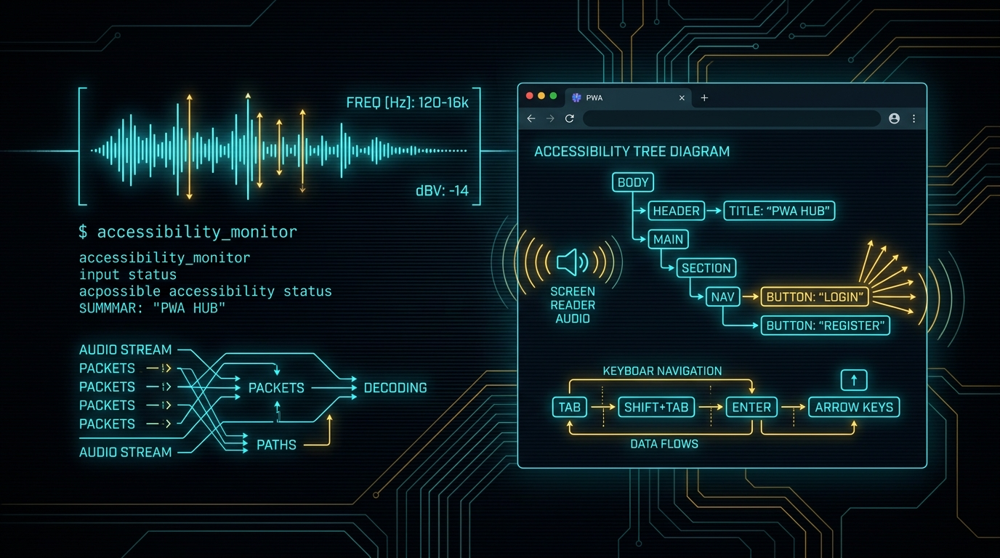

In my last post, Hacking by Ear at 500 WPM, and in my Hacking While Blind CLI Survival Guide on TheBlindHacker.com, I broke down how combining full-time screen zoom and high-speed speech output outpaces visual IDEs. Reading text through speech synthesizers at hyper-speed while navigating with locked magnification removes visual clutter. It forces you to operate on raw structure.
Consuming tools is only half the battle. At some point, you have to build them.
Building software as a visually impaired engineer usually means fighting an uphill battle against sighted developer habits. I use screen zoom at high magnification at all times, and I listen to screen reader output constantly. Most modern enterprise web apps are an absolute dumpster fire for that workflow. Buttons are unsemantic <div> tags with click listeners attached. Dynamic updates happen silently in the background without ARIA alerts. Modals pop open and trap your keyboard cursor in an infinite tab loop.
I stopped waiting for corporate front-end teams to fix their software. Instead, I use artificial intelligence to build my own tools.
I do not use AI because it writes pretty code. I use AI because models do not have eyes. When you give an LLM a strict accessibility specification, it has zero visual bias. It builds pure, semantic structure.
Here is the exact blueprint I use to architect lightning-fast command-line tools and Progressive Web Apps (PWAs) that are safe, keyboard-driven, and completely accessible by design.
The Sighted Developer Blindspot
Sighted developers build interfaces for their eyes first and the document object model (DOM) second.
They inspect a component in Chrome DevTools. They see a button with rounded corners, a sleek drop shadow, and a smooth hover animation. If it looks good to their eyes, they push it to production.
<!-- What a sighted developer often writes -->
<div class="submit-btn-glow" onclick="triggerScan()">
<span class="icon-radar"></span>
Run Offensive Scan
</div>
To my screen reader, that code snippet is an invisible ghost. It has no semantic role. It has no accessible name. It has no keyboard focus target. If I press the Tab key, my cursor skips right past it. If I try to activate it with the Enter or Space key, nothing happens because <div> elements do not listen for keyboard events by default.
Now compare that to the structural reality my screen reader needs:
<!-- What an accessible architecture requires -->
<button type="button"
id="btn-run-scan"
class="submit-btn-glow"
aria-label="Run Offensive Scan on Target Network"
onclick="triggerScan()">
<span class="icon-radar" aria-hidden="true"></span>
Run Offensive Scan
</button>
When you multiply this visual laziness across an entire single-page dashboard with nested tab panes, infinite scroll feeds, and unannounced AJAX requests, the interface becomes unusable. Sighted engineers spend seventy percent of their sprint tweaking CSS padding and gradient color stops. They leave accessibility as a frantic checklist item forty-eight hours before a compliance audit.
I flipped that workflow completely upside down.
Why the CLI and PWA Stack Wins
When I architect an internal security tool or an offensive operations dashboard, I only build two types of interfaces:
- A pure Command-Line Interface (CLI): Built for automation, terminal multiplexers (
tmux), text streams, and keyboard pipes. - A Progressive Web App (PWA): Built for structured multi-view management, offline local caching, and instant audio telemetry.
+-----------------------------------------------------------------------+
| NextGenRedTeam Operator UI |
+------------------------------------+----------------------------------+
| Command-Line Interface | Progressive Web App |
| - Raw POSIX stdout / stderr | - Semantic HTML5 DOM Tree |
| - Standard exit codes (0, 1, 2) | - WCAG AAA contrast and focus |
| - Grep, sed, and jq piping | - ARIA live region alerts |
| - Terminal bell audio telemetry | - Web Audio API earcons |
| - Headless batch execution | - Zero-latency Service Worker |
+------------------------------------+----------------------------------+
The Terminal Advantage
A CLI has no visual layout engine to corrupt. Data comes in through arguments, standard input (stdin), or configuration files. Output goes out through standard output (stdout) or standard error (stderr).
A terminal gives me complete deterministic control. I can pipe raw output into grep, slice fields with awk, or page line-by-line using less.
The Progressive Web App Advantage
When a tool needs state visualization, live target switching, or structured reporting, a desktop GUI built on Electron is usually bloated and sluggish. Electron wrappers run heavy Chromium instances that consume gigabytes of RAM and frequently drop accessibility tree hooks during DOM repaints.
A well-architected PWA (like our zero-backend JoeBro Sobro Smart Table Controller, featured on TheBlindHacker.com Projects) solves those headaches:
- Standalone Windowing: A PWA installs directly onto the operating system. It runs in its own window without browser toolbars, URL address bars, or extension icons that clutter the keyboard navigation tree.
- Instant Offline Execution: Service workers cache the application shell locally. When I launch the PWA, it loads from disk in five milliseconds. There is zero network lag to freeze the screen reader virtual cursor.
- Native Keyboard Event Routing: You can intercept global keybindings cleanly without fighting browser shortcut collisions.
- Hardware-Level Audio Synthesis: Using the Web Audio API, the app can synthesize custom audio cues (earcons) directly through the operating system soundcard.
Why I Use AI as My Accessibility Compiler
People ask me how I write front-end code and user interfaces without sight. The answer is simple: I treat AI models as headless structural compilers.
+-------------------------------------------------------------+
| Spec-Driven AI Architecture |
| |
| +-----------------------------------------------------+ |
| | 1. Human Operator Dictates Contract & WCAG Spec | |
| | - Keyboard shortcuts, ARIA regions, exit codes | |
| +--------------------------+--------------------------+ |
| | |
| v |
| +-----------------------------------------------------+ |
| | 2. AI Generates Semantic Tree & State Machine | |
| | - Pure HTML5 semantic elements (button, dialog) | |
| | - Predictable POSIX CLI argument parser | |
| +--------------------------+--------------------------+ |
| | |
| v |
| +-----------------------------------------------------+ |
| | 3. Automated Pre-Flight Verification Gate | |
| | - Headless browser Axe-core accessibility scan | |
| | - Tree-Sitter AST syntax and role validation | |
| +-----------------------------------------------------+ |
+-------------------------------------------------------------+
Here is why AI models excel at accessibility when directed by an experienced operator:
1. Models Have No Eyes
An LLM does not get seduced by aesthetic shortcuts. If you tell an AI to build a modal window, and your system prompt specifies strict WCAG AAA guidelines, the model will not use a styled <div>. It will use an HTML5 <dialog> element. It will bind the Escape key to close the window. It will place keyboard focus onto the first active element inside the container.
Visual bias disappears. The code is generated based on semantic rules and mathematical relationships between DOM nodes.
2. High-Speed Spec-Driven Development
I do not ask an AI to "make me a cool web app." That produces generic junk.
I write an architectural contract. I specify the state machine, the expected keyboard shortcuts, the exact ARIA live region policies, and the data schema. The AI produces the deterministic boilerplate in seconds. I spend my energy on system logic and security edge cases instead of typing repetitive HTML boilerplate.
3. Automated Tree-Sitter and Axe Linting
Before any code touches my disk, my local automation pipeline inspects the generated output. We run headless Playwright scripts backed by Axe-core and Tree-Sitter AST parsers.
If an AI-generated component lacks an accessible label, contains an unlinked form control, or leaves an open keyboard trap, the verification gate halts immediately. The model receives the AST error log and fixes the DOM tree before I ever review it with my screen reader.
Blueprint Part 1: Bulletproof Accessible CLI Architecture
If you build command-line tools for other security professionals, accessibility must be built into the core IO pipeline.
Here are the rules I enforce on every CLI tool:
- Never Mix Data and Errors: Send clean data to
stdoutand diagnostic messages or errors tostderr. Mixing them breaks screen reader output redirection. - Support Structured Machine Output: Always provide a
--jsonor--rawflag so operators can pipe output without parsing human-readable tables. - Deterministic Exit Codes: Never exit with code
0on failure. Screen readers rely on system bells and exit status codes to notify users when long scans finish. - Terminal Audio Telemetry: Use terminal bell characters (
\aor ASCII 7) or audio beeps to signal task completion on background jobs.
Here is a Python implementation of an accessible CLI harness:
#!/usr/bin/env python3
"""
Accessible CLI Scanner Harness
NextGenRedTeam Threat Lab Utility
Enforces clean stream separation, machine output, and audio telemetry.
"""
import sys
import json
import argparse
import time
def send_terminal_alert(success: bool = True):
"""
Emits an audible ASCII terminal bell alert.
Single bell for success, double bell for failure.
"""
if success:
sys.stderr.write("\a")
sys.stderr.flush()
else:
sys.stderr.write("\a")
sys.stderr.flush()
time.sleep(0.15)
sys.stderr.write("\a")
sys.stderr.flush()
def run_scan(target: str, json_mode: bool):
"""
Simulates an offensive security asset scan.
"""
sys.stderr.write(f"[*] Initiating scan against target: {target}\n")
sys.stderr.flush()
# Simulate inspection logic
findings = [
{"port": 22, "service": "ssh", "state": "open"},
{"port": 80, "service": "http", "state": "open"},
{"port": 443, "service": "https", "state": "open"},
]
if json_mode:
# Pure machine-readable output to stdout
payload = {
"target": target,
"status": "completed",
"findings_count": len(findings),
"findings": findings
}
sys.stdout.write(json.dumps(payload, indent=2) + "\n")
else:
# Clean text-first output for screen readers
sys.stdout.write(f"\n--- Scan Report for {target} ---\n")
for item in findings:
sys.stdout.write(f"Port {item['port']}/TCP is {item['state']} ({item['service']})\n")
sys.stdout.write(f"Total findings: {len(findings)}\n")
sys.stdout.flush()
send_terminal_alert(success=True)
def main():
parser = argparse.ArgumentParser(
description="NextGenRedTeam Accessible Security Scanner",
formatter_class=argparse.RawDescriptionHelpFormatter
)
parser.add_argument("target", help="IP address or hostname to audit")
parser.add_argument("--json", action="store_true", help="Output pure structured JSON to stdout")
args = parser.parse_args()
try:
run_scan(args.target, args.json)
sys.exit(0)
except KeyboardInterrupt:
sys.stderr.write("\n[!] Scan aborted by operator.\n")
send_terminal_alert(success=False)
sys.exit(130)
except Exception as err:
sys.stderr.write(f"\n[ERROR] Operational failure: {str(err)}\n")
send_terminal_alert(success=False)
sys.exit(1)
if __name__ == "__main__":
main()
Blueprint Part 2: Building Progressive Web Apps for the Blind
When we build web dashboards for offensive telemetry or real-time lab monitoring, a Progressive Web App gives us complete control over the interface lifecycle.
Below are the four core modules I require AI to scaffold for every accessible PWA project.
1. The Global ARIA Live Region Dispatcher
Screen readers will not announce background updates unless you pipe them through an aria-live region.
You need two distinct channels:
polite: Waits until the screen reader finishes speaking the current sentence. Used for status changes, scan logs, and non-blocking notifications.assertive: Interrupts the speech synthesizer immediately. Used for critical errors, session expirations, and safety aborts.
/**
* Accessible Live Announcement Dispatcher
* Manages polite and assertive speech output buffers.
*/
class LiveAnnouncer {
constructor() {
this.politeRegion = this._createRegion('live-polite', 'polite');
this.assertiveRegion = this._createRegion('live-assertive', 'assertive');
}
_createRegion(id, mode) {
let el = document.getElementById(id);
if (!el) {
el = document.createElement('div');
el.id = id;
el.setAttribute('role', 'status');
el.setAttribute('aria-live', mode);
el.setAttribute('aria-atomic', 'true');
// Hide visually while keeping it readable by speech synthesizers
Object.assign(el.style, {
position: 'absolute',
width: '1px',
height: '1px',
margin: '-1px',
padding: '0',
overflow: 'hidden',
clip: 'rect(0, 0, 0, 0)',
border: '0'
});
document.body.appendChild(el);
}
return el;
}
announce(message, priority = 'polite') {
const target = priority === 'assertive' ? this.assertiveRegion : this.politeRegion;
// Clearing text first ensures duplicate messages re-announce cleanly
target.textContent = '';
setTimeout(() => {
target.textContent = message;
}, 50);
}
}
export const announcer = new LiveAnnouncer();
2. Audio Telemetry with the Web Audio API
Why rely solely on spoken words when human hearing can process acoustic signals in five milliseconds?
We use subtle audio cues (earcons) to provide instant feedback. A crisp 880Hz sine wave confirms a successful action. A descending two-tone frequency alerts the operator that an asset failed verification.
/**
* Web Audio Earcon Synthesizer
* Provides zero-latency acoustic confirmation without external audio files.
*/
class AudioTelemetry {
constructor() {
this.ctx = null;
}
_initContext() {
if (!this.ctx) {
const AudioCtx = window.AudioContext || window.webkitAudioContext;
this.ctx = new AudioCtx();
}
if (this.ctx.state === 'suspended') {
this.ctx.resume();
}
}
playSuccess() {
this._initContext();
const now = this.ctx.currentTime;
const osc = this.ctx.createOscillator();
const gain = this.ctx.createGain();
osc.type = 'sine';
osc.frequency.setValueAtTime(587.33, now); // D5
osc.frequency.exponentialRampToValueAtTime(880.00, now + 0.12); // A5
gain.gain.setValueAtTime(0.08, now);
gain.gain.exponentialRampToValueAtTime(0.001, now + 0.12);
osc.connect(gain);
gain.connect(this.ctx.destination);
osc.start(now);
osc.stop(now + 0.12);
}
playError() {
this._initContext();
const now = this.ctx.currentTime;
const osc = this.ctx.createOscillator();
const gain = this.ctx.createGain();
osc.type = 'triangle';
osc.frequency.setValueAtTime(440.00, now); // A4
osc.frequency.setValueAtTime(220.00, now + 0.08); // A3
gain.gain.setValueAtTime(0.12, now);
gain.gain.exponentialRampToValueAtTime(0.001, now + 0.20);
osc.connect(gain);
gain.connect(this.ctx.destination);
osc.start(now);
osc.stop(now + 0.20);
}
}
export const soundFx = new AudioTelemetry();
3. Keyboard Focus Containment (Modal Trap)
When an operator opens a modal dialog or settings drawer, focus must stay trapped inside that container. If pressing Tab escapes to the background page, the blind user gets disoriented.
/**
* Accessible Modal Focus Trap
* Prevents focus leakage and binds Escape to close.
*/
export function trapFocus(containerEl, onCloseCallback) {
const focusableSelectors = [
'a[href]',
'button:not([disabled])',
'textarea:not([disabled])',
'input:not([disabled])',
'select:not([disabled])',
'[tabindex]:not([tabindex="-1"])'
].join(', ');
const focusableItems = Array.from(containerEl.querySelectorAll(focusableSelectors));
if (focusableItems.length === 0) return () => {};
const firstItem = focusableItems[0];
const lastItem = focusableItems[focusableItems.length - 1];
firstItem.focus();
function handleKeyDown(e) {
if (e.key === 'Escape') {
e.preventDefault();
onCloseCallback();
return;
}
if (e.key === 'Tab') {
if (e.shiftKey) {
// Shift + Tab moving backward
if (document.activeElement === firstItem) {
e.preventDefault();
lastItem.focus();
}
} else {
// Tab moving forward
if (document.activeElement === lastItem) {
e.preventDefault();
firstItem.focus();
}
}
}
}
containerEl.addEventListener('keydown', handleKeyDown);
return function cleanup() {
containerEl.removeEventListener('keydown', handleKeyDown);
};
}
4. Zero-Latency Service Worker Caching
A screen reader relies on smooth rendering. When a web application stalls on an asset download, the speech synthesizer stutters.
We install a deterministic Service Worker that caches the entire application shell locally using Cache-First routing:
// sw.js - Service Worker Cache Engine
const CACHE_NAME = 'ngrt-telemetry-v1';
const CORE_ASSETS = [
'/',
'/index.html',
'/css/accessible-theme.css',
'/js/app.js',
'/manifest.json'
];
self.addEventListener('install', (event) => {
event.waitUntil(
caches.open(CACHE_NAME).then((cache) => {
return cache.addAll(CORE_ASSETS);
}).then(() => self.skipWaiting())
);
});
self.addEventListener('activate', (event) => {
event.waitUntil(
caches.keys().then((keys) => {
return Promise.all(
keys.filter(k => k !== CACHE_NAME).map(k => caches.delete(k))
);
}).then(() => self.clients.claim())
);
});
self.addEventListener('fetch', (event) => {
// Always serve core UI shell from local disk cache
event.respondWith(
caches.match(event.request).then((cachedResponse) => {
if (cachedResponse) {
return cachedResponse;
}
return fetch(event.request);
})
);
});
The AI Prompting Recipe for Accessible Code
When you prompt an AI to build UI components, you must be surgical. Do not leave room for visual assumptions.
Here is the exact instruction block I include in my system instructions:
You are an expert accessibility systems architect.
All generated code must adhere strictly to WCAG 2.2 AAA and WAI-ARIA 1.2 specifications:
1. Never use <div> or <span> elements for interactive components. Always use native HTML5 tags (<button>, <a href>, <dialog>, <input>, <select>).
2. Every interactive element must possess a unique, descriptive aria-label or accessible text node.
3. Every dynamic content update must dispatch to an aria-live="polite" or aria-live="assertive" container.
4. Modal containers must enforce strict keyboard focus traps and listen for the Escape key to close.
5. All UI controls must be 100% operable via keyboard alone with visible and distinct focus rings.
6. Provide Web Audio API earcon telemetry hooks for critical state changes (success, warning, error).
7. Separate machine data from error output in all command-line utilities.
When you frame your prompts this way, the AI acts as an accessibility enforcer. It will not write code that breaks your screen reader.
Frequently Asked Questions
Why do most single-page applications crash or freeze screen readers?
Single-page applications (SPAs) frequently trigger unannounced DOM mutations. When a JavaScript framework re-renders hundreds of elements on the fly without using proper ARIA landmarks or live regions, the screen reader loses its virtual cursor anchor. The speech engine freezes while trying to recalculate the entire accessibility tree from scratch.
How does a Progressive Web App (PWA) solve browser accessibility lag?
A PWA runs in a dedicated application window detached from browser tabs, toolbars, and search bars. Service workers serve the application shell from local storage, removing network latency. This keeps DOM operations deterministic and prevents the screen reader from losing focus during network hiccups.
Why does AI generate cleaner semantic HTML than human front-end developers?
Human developers rely on visual feedback. If a styled <div> looks like a button, they assume it functions like a button. AI models operate entirely on logical tokens and semantic relationships. When given strict WCAG rules, the model maps controls directly to native HTML5 interactive elements without visual shortcuts.
What is the best way to handle audio telemetry and earcons in web tooling?
Use the native browser Web Audio API rather than external MP3 or WAV files. Synthesizing frequencies using oscillators requires zero network requests, executes in under two milliseconds, and works offline inside progressive web apps without audio playback delays.
How do I prevent keyboard focus traps in dynamic modals?
Listen for the keydown event inside the dialog container. Intercept the Tab key: if the user holds Shift and presses Tab on the first focusable element, send focus to the last element. If the user presses Tab on the last element, wrap focus back to the first. Always bind the Escape key to dismiss the dialog and return focus to the trigger button.
Community & Resources
Building accessible offensive security software is not about checking a box for human resources. It is about speed, precision, and building software that respects human cognitive bandwidth.
- Explore The Blind Hacker Hub: Visit TheBlindHacker.com for Joe Brinkley's full portfolio, Open-Source Projects, and Media & Keynote Appearances.
- Explore The CLI Field Guide: Read the full Hacking While Blind Screen Reader CLI Guide for hands-on tips on configuring Linux terminals, screen readers, and penetration testing tools.
- See It in Action on Silicon: Read our follow-up hardware research, Hunting Edge AI CVEs: From Demo Code to DMA Memory Corruption, where we used this exact 500-WPM CLI workflow to uncover seven vulnerabilities in the Axera AX8850 NPU runtime.
- Join the Movement: Get involved with DeadPixelSec.com and join our Discord community at discord.gg/deadpixelsec, where blind and disabled hackers build accessible tools together.
- Threat Lab Research: Follow our continuous work on autonomous swarms, DAST architectures, and adversarial telemetry on the NextGenRedTeam Threat Lab.
- Connect with Joe Brinkley: Connect on LinkedIn (
in/brinkleyjoseph), X (@TheBlindHacker), and NextGenRedTeam on X (@NextGenRedTeam).